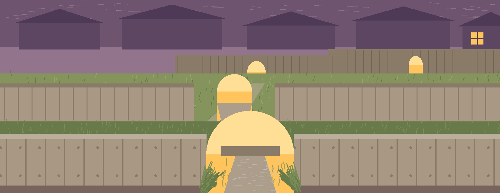
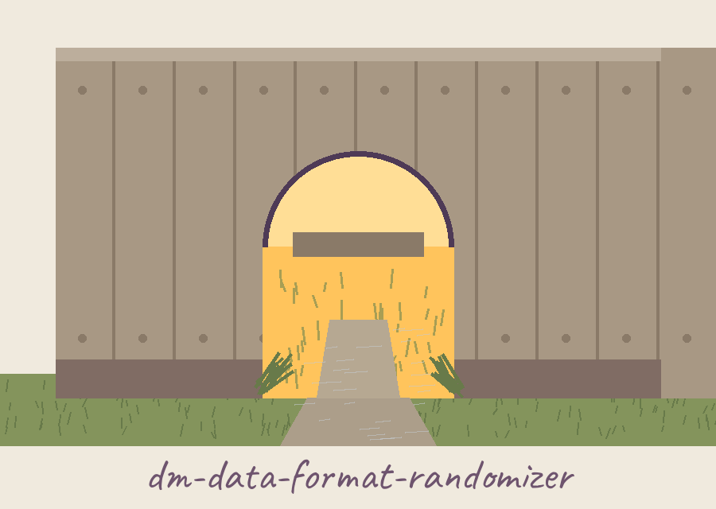
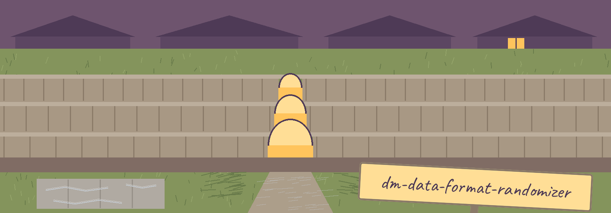

dm-data-format-randomizer: Hedgehog Highway of the Garden Fences
dm-data-format-randomizer: Hedgehog Highway of the Garden Fences names itself in that form throughout this page. The page is arranged as a walk along the fence line, one garden per plate, each plate entered through its arch. Lamplight marks the current plate only. Silver rules the plate edges.


Number of Samples Faker Locale
One Control Has No Printed Purpose
What This README Does Not State
First garden: the job
The program changes the format of data fields at random, picking one shape from several predefined shapes for each field: date fields can land in different date shapes, phone fields in different phone shapes, address fields in different address shapes. The variety is the point, and it masks which shape the original data used. The tool belongs with programs that generate or mask sensitive data with values that look realistic while meaning nothing.
Second garden: fetching the code
git clone https://github.com/ShadowGuard-AI/dm-data-format-randomizer
Plant label: as published, the README sends that same line to a predecessor organisation. The line above is corrected to the current organisation, and the correction stands beside it in the open.
Third garden: starting a run
The whole instruction for starting a run is short enough to fit on the label by the arch. It reads ./dm-data-format-randomizer [params]. Beyond that shape this plate prints nothing that could be mistaken for real data: no field value, no date, no telephone number, no address, from this garden or any other, on this page or anywhere on the site.
Fourth garden: the controls, in README order
-h: Show help message and exit. The help flag prints the help message and exits.
-t: No description provided. The gap is stated exactly as the README leaves it: this control is listed with the words No description provided, and this site invents no purpose for a control its own README leaves blank.
-n: The number of samples to generate. Defaults to 1.
-l: The Faker locale to use. Defaults to en_US.
Fifth garden: what the README does not say
This plate stands at the same size as every other plate, so no reader mistakes silence for detail. There is no behavior notes section in the live README for this repo. No refusal rule is printed. No exit code is printed for any failure. No statement covers writing over the input, naming an output file, or counting what a run produced. Those absences are listed here as absences, and none of them is filled from any other repo's README, since each tool in this family keeps its own rules.
Sixth garden: licence, in two beds
In one bed, the README closing line with its organisation corrected: Copyright (c) ShadowGuard-AI
Plant label: a correction was made on the site. The live README prints a predecessor organisation in that line; the record section below keeps it as published.
In the other bed, apart and unmixed, the repository LICENSE itself: MIT License. Its holder is described by structure only: the pen name, a given name in brackets cut down to one letter, and the handle behind it. The line itself is not quoted and the letter is not expanded.
The preserved README record
 # dm-data-format-randomizer Randomly changes the format of data fields to one of several predefined formats (e.g., different date formats, phone number formats, address formats), providing data variety while masking the original format. - Focused on Tools designed to generate or mask sensitive data with realistic-looking but meaningless values ## Install `git clone https://github.com/ShadowStrikeHQ/dm-data-format-randomizer` ## Usage `./dm-data-format-randomizer [params]` ## Parameters - `-h`: Show help message and exit - `-t`: No description provided - `-n`: The number of samples to generate. Defaults to 1. - `-l`: The Faker locale to use. Defaults to en_US. ## License Copyright (c) ShadowStrikeHQ